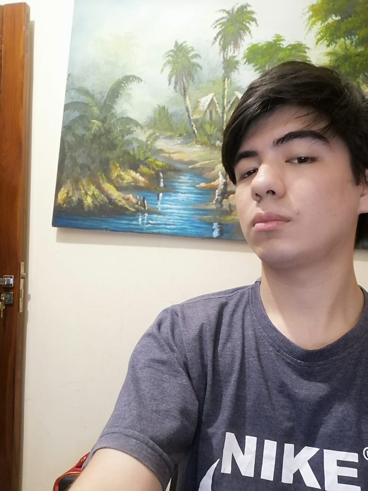

Conóceme
Anderson Carvajal Romero
Entre Cuarto anillo tres pasos al frente, Barrio Petrolero Guaracachi
Santa Cruz, 4125
69079832
andersoncarvajalromero30@gmail.com

Perfil Académico
Estudiante de Ingeniería de Sistemas en la Universidad Privada Domingo Savio con un fuerte interés en Inteligencia Artificial.
Habilidades en Aprendizaje automático y una sólida base en chatbots.
Buscando oportunidades para aplicar mis conocimientos en un entorno profesional.
Educación
Licenciatura en Ingeniería de Sistemas
Universidad Domingo Savio | Santa Cruz
Fecha de inicio: [Julio, 2022] - Fecha estimada de graduación: [Agosto, 2026]
Cursos relevantes: [Redes, Diseño Web, Programación]